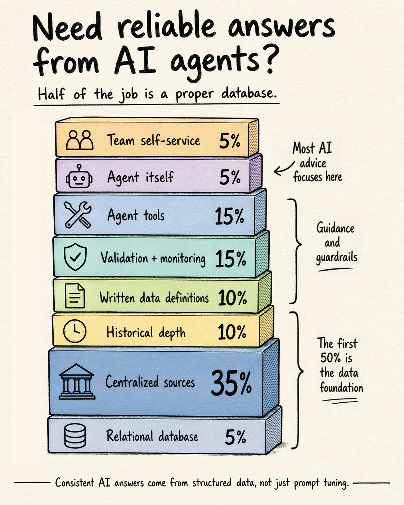
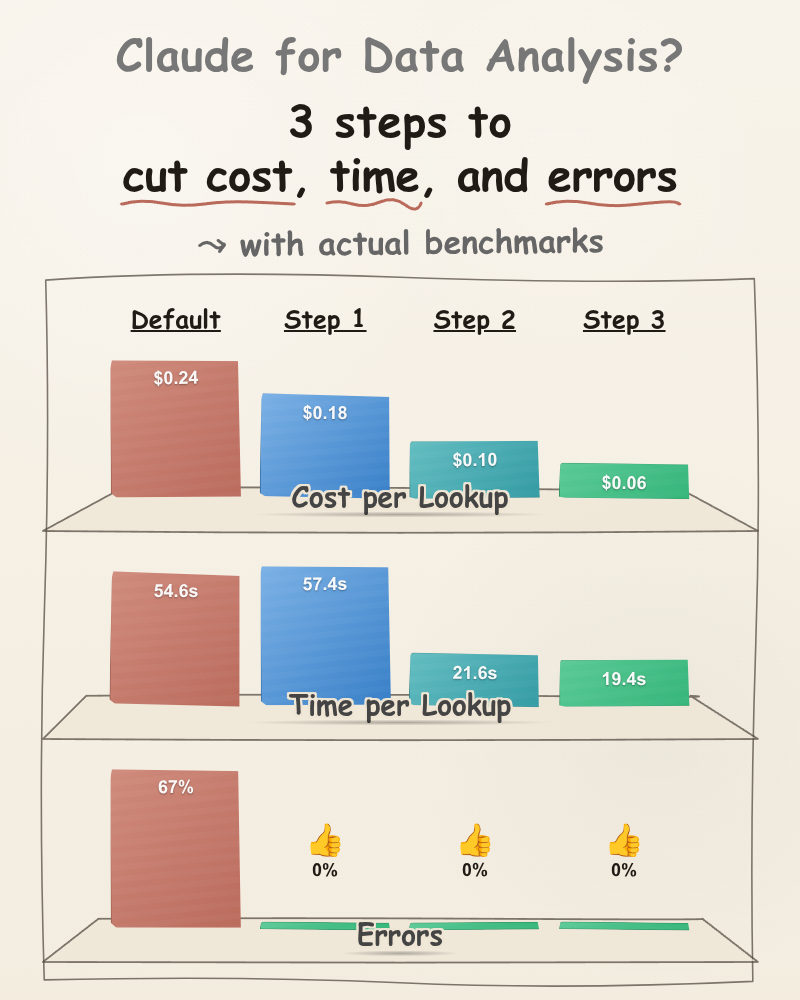

THE PROMISE ───────────────── Data-driven business decisions. Push ads. Update a listing. Order more inventory. Cut losses on a launch. Defend an ASIN. You wish you could make these calls more data-driven, less gut. Claude looks like the answer.
THE PAIN ────────────── 1. Slow. Your dashboard could have answered faster. 2. Costly. Every byte of data burns tokens. 3. Unreliable. ▸ Hallucinates when data is missing. ▸ Math errors, like a human doing it in their head. ▸ Different approach every time you ask. ▸ Misreads columns. ▸ Can't connect reports to each other. ┌───────────────────────────────────────────────┐ │ If you can't trust it, that's a deal-breaker. │ └───────────────────────────────────────────────┘
THE CONTEXT ───────────────── The Trap ▸ Claude forgets everything between sessions. ▸ So you load more memory at the start of each one. ▸ But instruction bloat makes Claude confused, not smarter. Context Window It's like a person with a head injury who can't store short-term memories. Every day, he wakes up at the mental age of the day the injury happened. ┌───────────────────────────────────────────────────────────────┐ │ Today's top agents start getting dumber around 50K tokens. │ └───────────────────────────────────────────────────────────────┘
THE HOPE ────────────── The fix isn't new. DBAs and engineers have done it for decades. Claude helps you follow the same principles without being one. 1. Data foundations: Centralize all your data into a single database because important insights require merging unconnected reports. 2. Guidance and guardrails: Implement your key business logic as executable code so Claude doesn't try to rediscover it on every call.
THE FOUNDATION ──────────────────────

THE GUARDRAILS ─────────────── Stop making Claude rediscover its learnings every session. Have it translate them into reliable code it can run every time. 1. Data model guide Document the structure of your business data. 2. Command-line tool Implement the common queries as a small CLI. 3. MCP wrapper Expose the CLI to Claude as a typed tool.
See LinkedIn for benchmark details
THE INSIGHT ───────────────── (1) Data-driven decisions require an investment in data foundations and a single source of truth. (2) Do NOT think of Claude as your data analyst. Think of it as your data engineer & programmer
THE OUTLOOK ───────────────── Recurring theme today: own your systems. Own your data. Own your dashboards. Own your processes. Until Claude Code, real data ownership wasn't feasible for non-programmers. Now it is. In Session 2: your own SP-API access, your own database (among other things) A forewarning: SP-API is complicated and poorly documented. Find me at the breaks and in the evening.